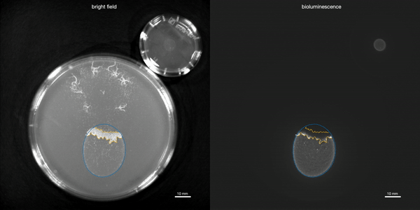
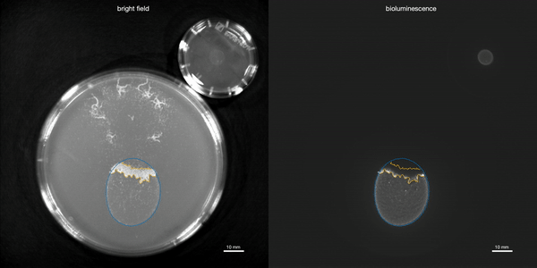

SocBehGenoPheno: Genetic basis of emergent social behaviour from genotype-phenotype mapping
funded by the European Union’s Horizon 2020 programme under the Marie Sklodowska-Curie grant agreement 842860
The coordinated action of two or more individuals within the same species, known as collective behaviour, is central to many biological processes. However, little is known about the genetic origins of social behaviour in general. The scope of the EU-funded SocBehGenoPheno project is to delineate the dynamic relationship between genotype and phenotype in collective behaviour. To that end, researchers will use the nematode worm Caenorhabditis elegans as a model system to extract high-throughput imaging data of worm postures and spatial positions and correlate them with social behaviour. Moreover, they will assess the impact of specific mutations in the social context, providing important insight into the genetics of social behaviour.
 

Measuring Caenorhabditis elegans Spatial Foraging and Food Intake Using Bioluminescent Bacteria
Ding, Siyu Serena, Romenskyy, Maksym, Sarkisyan, Karen S. and Brown, Andre E. X.
For most animals, feeding includes two behaviors: foraging to find a food patch and food intake once a patch is found. The nematode Caenorhabditis elegans is a useful model for studying the genetics of both behaviors. However, most methods of measuring feeding in worms quantify either foraging behavior or food intake, but not both. Imaging the depletion of fluorescently labeled bacteria provides information on both the distribution and amount of consumption, but even after patch exhaustion a prominent background signal remains, which complicates quantification. Here, we used a bioluminescent Escherichia coli strain to quantify C. elegans feeding. With light emission tightly coupled to active metabolism, only living bacteria are capable of bioluminescence, so the signal is lost upon ingestion. We quantified the loss of bioluminescence using N2 reference worms and eat-2 mutants, and found a nearly 100-fold increase in signal-to-background ratio and lower background compared to loss of fluorescence. We also quantified feeding using aggregating npr-1 mutant worms. We found that groups of npr-1 mutants first clear bacteria from within the cluster before foraging collectively for more food; similarly, during large population swarming, only worms at the migrating front are in contact with bacteria. These results demonstrate the usefulness of bioluminescent bacteria for quantifying feeding and generating insights into the spatial pattern of food consumption.